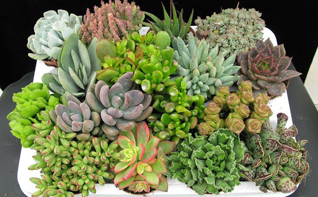
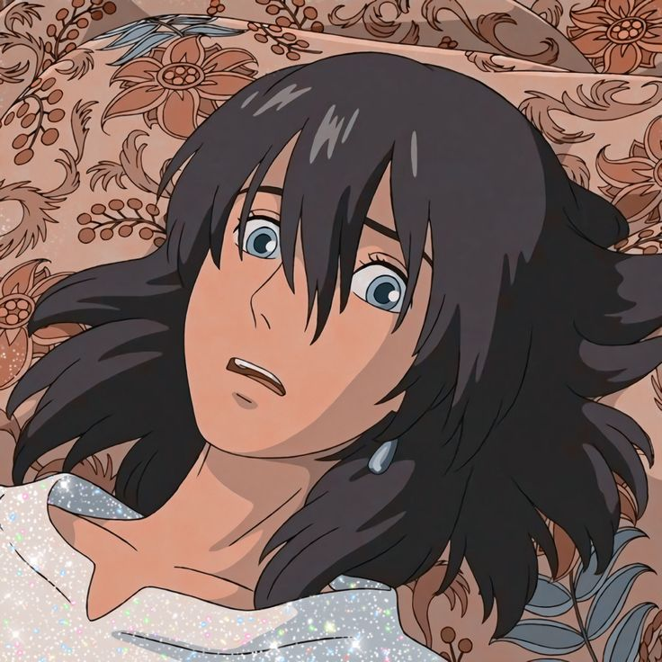
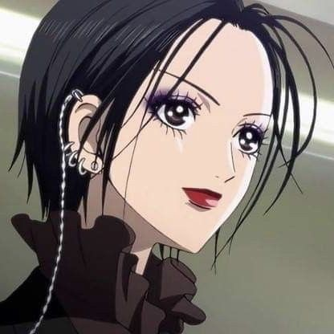
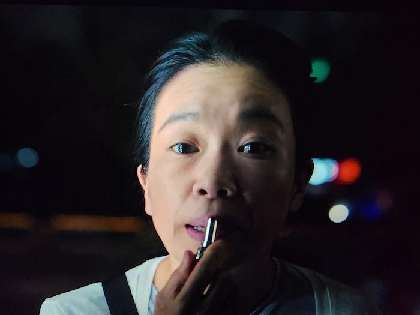
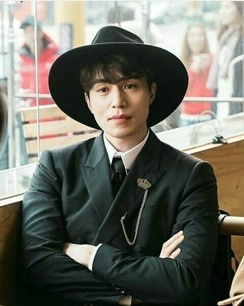

Pero puedo escribir más de las plantas porque son un tema extenso, así que voy a hablarles de las CRASULACEAS
estás plantas se han vuelto muy populares ultimamente debido a su fácil propagación, cuidados y que todas son muy lindas :D.
Son fáciles de identificar, debido a que sus hojas son gruesas porque ahí es donde guardan el agua. De hecho el nopal y la sábila son
un muy buen ejemplo de estas plantas. Para guardar taaaanta agua, lo que hacen el realizar la fotosintesis y demás procesos durante la noche
para así evitar perder liquidos.
Para saber cuando hay que regar las plantas, solo basta con revisar la tierra; en caso de estar muy seca se debe regar hasta que el agua caiga
por debajo de la maceta, en caso de que la tierra este humeda o mojada, lo mejor es no regar, ya que un exceso de agua puede provocar que las
raíces se pudran.
Su propagación se da por esquejes o por las hojitas, siendo la primera la forma más rápida y sencilla. Pero para ambos procesos hay que tener
cuidado de tener las tijeras desinfectadas y no regar nada hasta que cicatrice, el no esperar o usar materiales contaminados podría llevar a
la planta a una infección por algún hongo.

Mis personajes favoritos y porque son top
Nombre |
Foto |
¿Por qué es de mis favoritos? |
| Howl |
 |
Es Howl, necesitan más razones? |
| Nana |
 |
Es una mujer que tuvo una vida muy dificil, y que aun así logró salir
adelante para luchar por sus sueños y ambiciones. Logró aprender a ser
libre después de haber vivido tantas cosas, y siempre trato de ayudar a
sus cercanos en cualquier situacion que se encontrarán y nunca los juzgó,
aunque bien si los regañaba cuando la cajeteaban feito.
Además tiene un estilo muy superior >>>
|
| Arataka Reigen |
 |
Es un papá luchón que se hace responsable de un hijo que ni es de el jajaj.
Siempre ayudó a Mob y daba consejos muy bonitos, además de que siempre lo
apoyaba en medida de lo posible.
Puede que fuera un estafador de primera, pero miente más el gobierno.
También admiro que siempre trato de perseguir su sueño aunque fuera muy dificil
o hasta imposible. Lo tqm.
|
| kang hyun nam |
 |
La admiro porque siempre busco una vida mejor para ella y su hija a cualquier costo
incluso si eso significaba tener que hacer cosas ilegales que condujeran a la muerte
de muchas otras personas.
También a pesar de todas las situaciones que vivía, siempre trataba de sonreir y ayudar
a las personas que pudiera.
La escena del labial fue totalmente mi favorita, fue el final que necesitaba para ella T.T
|
| "El angel de la muerte" |
 |
Comencemos por el hecho de que el actor que interpreta a este personaje es muy superior
y es de mis favoritos.
Es un personaje muy comico, que creició mucho durante todo el drama y aprendio a
perdonarse a si mismo y a los demás, y que apesar de que no podía cambiar lo que hizo
podía seguir adelante aprendiendo de esos errores.
Además tuvo un final muy bonito, justo como lo merecía después de tanto.
|